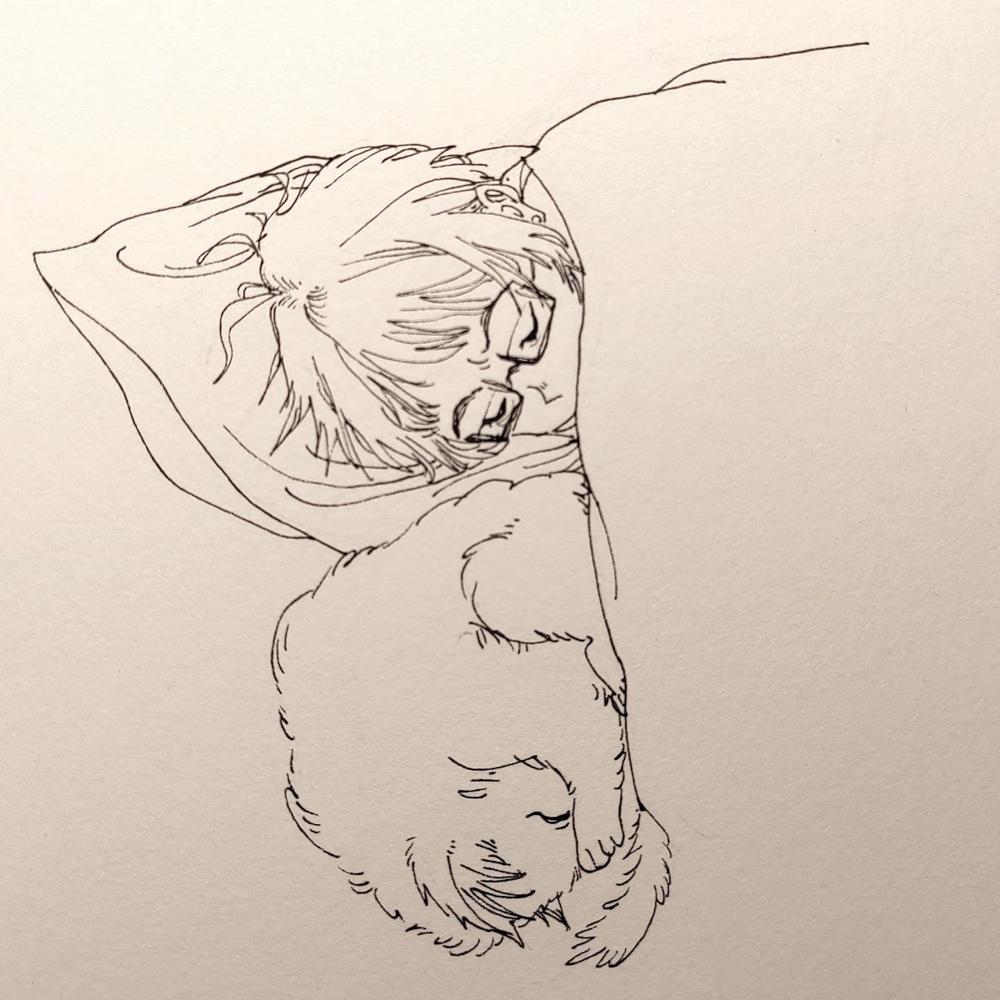

Ziyu Neroli ↑
Mizu Neroli ↓
Welcome!
Hi!
I’m Nero Ziyu Li, a math PhD candidate (thesis submitted on 15 Sep 2026) in the Dynamical Systems group at Imperial College London, also in CDT Random Systems by University of Oxford. I previously completed my Master of Research at the University of New South Wales (UNSW Sydney), where I studied combinatorics and fractals.
Please find my CV if you would like to contact me, or see my Google Scholar profile (https://scholar.google.com/citations?user=fHiwGoEAAAAJ). Also, find the site for my research details and GitHub for Python packages.
I currently work on bounded noise dynamical systems under the supervision of Prof. Jeroen Lamb and Prof. Martin Rasmussen.
For solo papers, I use the name Ziyu Neroli.
I love the theorem that, in form, appears as elegant and simple as a blossom of neroli; yet its proof, when tasted, reveals the bitterness of an orange.